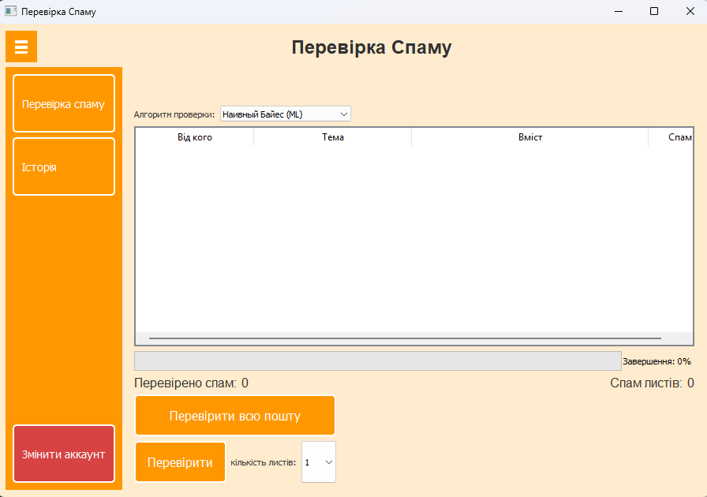

Опис проекту
Система аналізу електронної пошти - це десктопний додаток, розроблений для автоматичного виявлення спам-повідомлень у поштовій скриньці Gmail з використанням алгоритмів машинного навчання та власних фільтрів на основі ключових фраз.
Мета проекту
Основною метою проекту є створення ефективного інструменту для аналізу вхідної пошти, який поєднує:
- 4 алгоритми класифікації (Наївний Байєс у двох варіантах, Випадковий ліс та Логістична регресія)
- Систему фільтрації на основі ключових фраз з можливістю розширення
- Інтеграцію з IMAP-сервером Gmail для прямого доступу до поштової скриньки
Актуальність проблеми
Проблема спаму в електронній пошті залишається однією з найбільш гострих у кіберпросторі:
- Близько 45% всіх електронних листів у світі є спамом
- Користувачі витрачають до 30% робочого часу на обробку непотрібних повідомлень
- Традиційні фільтри часто пропускають спам або помилково класифікують корисні листи
- Зростає кількість фішингових атак через електронну пошту
Даний проект пропонує комплексне рішення, що поєднує переваги машинного навчання та правил на основі фраз.
Основні завдання проекту
- Реалізація безпечного підключення до Gmail через IMAP-протокол
- Розробка інтуїтивного інтерфейсу на PyQt5 для перегляду та аналізу листів
- Інтеграція та порівняльний аналіз ефективності різних алгоритмів ML
- Створення системи збереження історії перевірок у текстовому форматі
- Реалізація автоматичного переміщення спаму до відповідної папки
- Забезпечення можливості вибору алгоритму перевірки безпосередньо в інтерфейсі
Архітектура проекту
Клієнтський інтерфейс
Графічний інтерфейс на PyQt5 з таблицею листів, панеллю управління та візуалізацією результатів перевірки.
Модуль аналізу
Компонент, що включає 4 алгоритми машинного навчання та кастомний фільтр на основі ключових фраз для класифікації листів.
Система логування
Підсистема для збереження історії аналізу у текстовому файлі з можливістю перегляду в інтерфейсі програми.